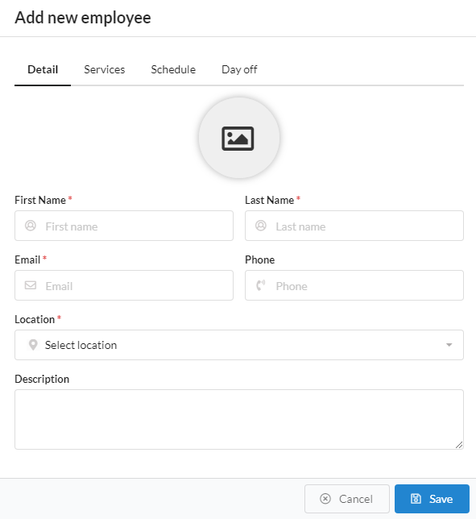
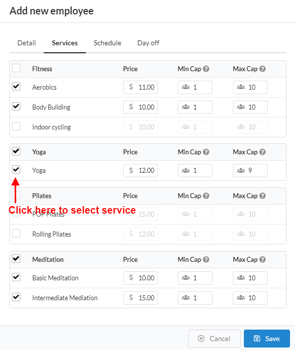
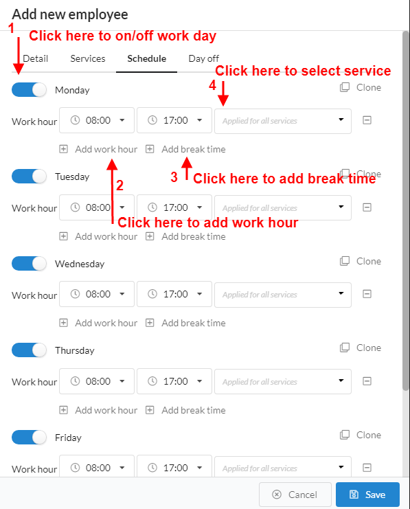
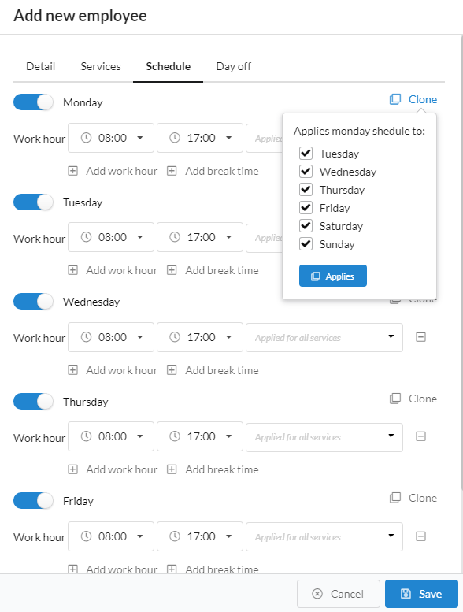
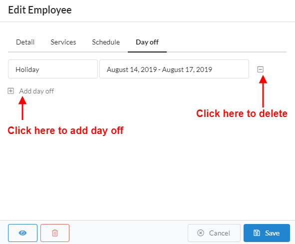
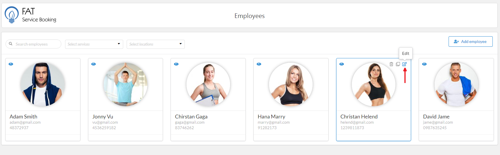

Employees are those who perform a service. It is necessary to have at least one employee created for the plugin to work properly.. To create employee, please do follow:

In this tab, you can select service that this employee provide by click check box at left service and you can defined price, minimal capacity and maximum number of person per one booking of this service

In this tab, you can on/off work day (Monday -> Sunday) and work hour, break time, service for each day. In service dropdown, it will be list all of service what you selected in 'Service' tab. At default it will be apply work hour, break time for all service. If service have difference work hour and break time, you can select service in drop down and add more work hour, break time corresponding
You can clone schedule to another day by hover mouse on 'Clone', the clone popup will be display and you can select clone to day via checkbox and click 'Applies' button


By click 'Add day off' to add more day off and you need fill name and select date ranger

After create employee, if you want edit or delete, please hover mouse on employee item. The 'edit' or 'delete' icon will be appearance in top right corner of item. Please click 'edit' icon if you want edit, or 'delete' icon if want delete
